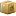
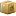

 -
 -

Location List
List locations created with the location editor Loced.
- The execute column reveals links to other modules or external maps
- If photos are uploaded to the appropriate topo folder, they can be accessed in the Files column
- A NeDi- or static-map can be added as well. If the coordinates are available, labeled markers are drawn
 NeDi Help
NeDi Help